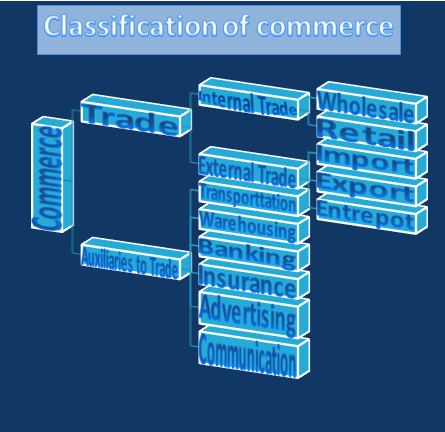

Classification of Commerce
Commerce can be classified into two different categories which include the following:
-
Trade
As we all know that trade is the sale, transfer or exchange of goods and services, for mutual benefit. The person who plays the role of a middleman between the producer and the consumer is called a trader. Trade is further classified into two parts:
-
Internal Trade
Internal trade is the exchange of goods and services within a country's borders. It occurs between regions, cities, or states of a nation.In this trade the common currency is used and similar legal, economic, and social systems.Internal Trade is also classified into two parts:
-
Wholesale
Wholesale trade involves the sale of goods in large quantities to retailers, other businesses, or industrial consumers, rather than to the general public. Wholesalers act as intermediaries between manufacturers and retailers.
-
Retail
Retail trade involves selling goods directly to the final consumers in smaller quantities. Retailers serve as the last link in the supply chain between wholesalers or manufacturers and the public.
-
External Trade
External trade refers to the exchange of goods, services, and capital across international borders or between different countries.It can be classified into three categories:
-
Import
Import refers to the act of bringing goods or services into a country from abroad. It can also mean introducing new ideas, customs, or products from one location to another.
-
Export
Exports are goods and services that are produced in one country and sold to buyers in another country. They are a key component of international trade, along with imports.
-
Entrepot
Entrepôt refers to an intermediary center of trade and transshipment where goods for import or export are stored without paying import duties. Hong Kong is noted as a significant entrepôt for the Chinese mainland.
-
Import
-
Internal Trade
-
Auxillaries to Trade
Auxiliaries to trade covers all those activities which help in the efficient flow of commercial activities. There are various hindrances in undertaking trade. Auxiliaries to trade help in eliminating those hindrances:
-
Transportation
Transportation eliminates the hindrance of place by supplying or sending the goods from their place of manufacturing to the place of consumption. As we know, the goods are manufactured in one place but are demanded at various locations. To solve this problem, the transportation activities are proved to be helpful.
-
Warehousing
Warehousing removes the hindrance of time and storage. Various goods are produced in a particular season but are demanded throughout the year for daily uses like cotton, sugar, juice, etc. Other than this, there are some goods which are demanded in a particular season only such as woolen clothes, cotton clothes, umbrellas, etc. Hence, warehousing provides proper storage and safety to these goods for future trading.
-
Banking
The banking sector helps in eliminating the hindrance of finance by providing financial support to the organization or enterprise. As we know, there is a time gap between the production and consumption of goods which means there will be a gap between the investment and receiving the payments of funds. In such a case, the banks help the entrepreneur in raising funds so that the production activities of the firm will not be affected.
-
Insurance
Insurance is helpful in removing the hindrance of fear or risk of loss during transporting goods from one place to another. It also reduces the risk of loss of goods by theft or fire.
-
Advertising
Advertising removes the hindrance of information/knowledge in the market by informing the customers and making them aware of the goods and services provided by the producers. The seller can use various channels like radio, internet, television, newspaper, etc. to advertise their products.
-
Communication
The goods and services offered by the sellers are needed to be communicated among the buyers as well as buyers should also convey their needs to the sellers by way of orders. This need of both the buyers and sellers can be transferred by the way of communication.
-
Transportation
Scope of Commerce
The scope of commerce is vast and multifaceted, encompassing all activities related to the exchange of goods and services. Commerce acts as a bridge between producers and consumers, facilitating the distribution and sale of products. Its scope can be broadly categorized into the many following areas.
Courses in commerce strem
I. Undergraduate Courses in the Commerce Stream
1.Bachelor of Commerce (B.Com)
- Duration: 3 years
- Overview: This is the most common commerce course that covers subjects like accounting, economics, business law, taxation, and auditing. Specializations may include:
- B.Com in Accounting and Finance
- B.Com in Banking and Insurance
- B.Com in Business Analytics
2.Bachelor of Business Administration (BBA)
- Duration: 3 years
- Overview: This course is designed for students interested in business and management. It includes subjects like management principles, human resources, marketing, finance, and business law.
3.Bachelor of Management Studies (BMS)
- Duration: 3 years
- Overview: Similar to BBA, BMS focuses more on management with an emphasis on analytical and problem-solving skills in areas like operations, finance, and marketing.
4.Bachelor of Economics (B.Econ)
- Duration: 3 years
- Overview: This course dives deep into economic theories, statistical methods, and econometrics. It’s ideal for students looking to pursue a career in economics, public policy, or research.
5.Bachelor of Financial Markets (BFM)
- Duration: 3 years
- Overview: Focuses on financial markets, investment, portfolio management, and stock trading. It’s suitable for those interested in the stock market and trading careers.
6.Bachelor of Banking and Insurance (BBI)
- Duration: 3 years
- Overview: Covers topics related to the banking sector, insurance policies, and risk management.
7.Chartered Accountancy (CA)
- Duration: Typically 5 years including articleship
- Overview: One of the most prestigious courses in the commerce stream, CA focuses on financial auditing, taxation, and accounting principles.
8.Company Secretary (CS)
- Duration: 3-4 years depending on the level
- Overview: This course focuses on company law, governance, and regulatory compliance.
9.Cost and Management Accounting (CMA)
- Duration: 3-4 years
- Overview: CMA focuses on cost accounting, budgeting, performance evaluation, and financial management.
10.Bachelor of Commerce in Taxation (B.Com Taxation)
- Duration: 3 years
- Overview: A specialized commerce degree focused on direct and indirect taxation policies and their implementation.
II. Postgraduate Courses in the Commerce Stream
1.Master of Commerce (M.Com)
- Duration: 2 years
- Overview: This is the most common postgraduate degree in commerce. It covers areas like accounting, economics, business management, and taxation. Specializations include:
- M.Com in Finance
- M.Com in Taxation
- M.Com in Accounting and Auditing
- M.Com in Business Management
2.Master of Business Administration (MBA)
- Duration: 2 years
- Overview: MBA is one of the most sought-after degrees in commerce and management. It offers a wide range of specializations, such as:
- MBA in Finance
- MBA in Marketing
- MBA in Human Resource Management
- MBA in International Business
- MBA in Operations Management
3. Master of Management Studies (MMS)
- Duration: 2 years
- Overview: Similar to an MBA, MMS focuses on business and management studies with an emphasis on managerial skills and leadership development. Popular specializations include finance, marketing, and operations.
4.Chartered Accountancy (CA) – Final Level
- Duration: Varies (based on completion of articleship and exams)
- Overview: After completing the intermediate level, students can move on to the final CA level, which focuses on advanced auditing, financial management, and corporate laws.
5.Company Secretary (CS) – Professional Level
- Duration: Varies
- Overview: After completing the executive level, students move to the professional level. It covers governance, company law, and corporate compliance.
6.Master of Financial Management (MFM)
- Duration: 2 years
- Overview: MFM focuses on advanced financial management, investment strategies, and financial decision-making skills. It prepares students for roles in corporate finance, banking, and financial services.
7.Master of Economics (M.A. in Economics)
- Duration: 2 years
- Overview: This course provides an in-depth understanding of economic theories, econometrics, and policy formulation. It is suitable for those aiming for careers in research, academia, or economic consulting.
8.Cost and Management Accounting (CMA) – Final Level
- Duration: Varies
- Overview: The final stage of the CMA qualification focuses on cost auditing, strategic financial management, and decision support systems.
9.Master of International Business (MIB)
- Duration: 2 years
- Overview: MIB focuses on international trade, global economics, cross-border commerce, and business strategies for international markets.
10.Master of Taxation
- Duration: 2 years
- Overview: This specialized degree focuses on direct and indirect taxation laws, tax planning, and policy. It is ideal for students looking to work in taxation or related consultancy roles.
11.Postgraduate Diploma in Banking and Finance (PGDBF)
- Duration: 1-2 years
- Overview: This diploma provides specialized knowledge in banking operations, financial services, and banking regulations. It is designed for students looking to pursue careers in the banking sector.
12.Master of Business Laws (MBL)
- Duration: 2 years
- Overview: This program focuses on business law, corporate regulations, and the legal aspects of business transactions.
13.Master of Commerce in Financial Accounting (M.Com in Financial Accounting)
- Duration: 2 years
- Overview: A specialized course that offers advanced insights into financial accounting, corporate financial reporting, and auditing practices.
Career Options in Commerce
1. Accounting and Finance
- Chartered Accountant (CA): Specializes in accounting, auditing, and taxation. Requires passing the CA exams and fulfilling training requirements.
- Cost and Management Accountant (CMA): Focuses on cost accounting and management strategies.
- Financial Analyst: Analyzes financial data to help businesses make investment decisions.
- Investment Banker: Works with businesses to raise capital by issuing stocks, bonds, and other securities.
- Auditor: Examines financial records to ensure accuracy and compliance with regulations.
- Tax Consultant: Specializes in tax laws and advises clients on tax planning and filing.
2. Business and Management
- Business Analyst: Works on improving business processes, systems, and efficiencies.
- Entrepreneur: Starts and manages your own business.
- Management Consultant: Advises companies on how to improve performance.
- Human Resources Manager: Oversees recruitment, employee relations, and other HR functions.
- Marketing Manager: Plans and executes marketing strategies to promote products or services.
3. Banking and Insurance
- Commercial Banker: Manages banking operations, loan processing, and customer relationships.
- Insurance Underwriter: Assesses risk and determines premium rates for insurance policies.
- Loan Officer: Helps businesses or individuals secure loans from financial institutions.
4. Economics and Research
- Economist: Studies economic data and trends to offer insights on economic policies.
- Market Research Analyst: Analyzes market conditions to understand potential sales for a product or service.
5. Stock Market and Investments
- Stockbroker: Buys and sells stocks and other securities on behalf of clients.
- Portfolio Manager: Manages investment portfolios for clients, focusing on asset allocation.
- Wealth Manager: Provides advice on investments, taxes, estate planning, and retirement to high-net-worth individuals.
6. Actuarial Science
- Actuary: Analyzes financial risks using mathematics, statistics, and financial theory, especially in the insurance and pension industries.
7. Company Secretary (CS)
- Company Secretary: Ensures that a company complies with legal and regulatory requirements and corporate governance norms.
8. Law
- Corporate Lawyer: Specializes in corporate law, including mergers, acquisitions, and compliance.
- Tax Lawyer: Focuses on legal issues related to taxation.
- Legal Consultant: Provides legal advice to businesses or individuals.
9. Digital Marketing
- SEO Specialist: Works on improving a company's website visibility in search engines.
- Social Media Manager: Manages a company's social media presence.
- Content Marketer: Develops and manages content strategies for brands.
10. E-commerce
- E-commerce Manager: Oversees online business operations and strategy.
- Supply Chain Manager: Manages the flow of goods from manufacturers to customers.
11. Teaching and Academia
- Commerce Teacher: Teaches commerce-related subjects at schools or universities.
- Lecturer/Professor: Requires advanced studies (Master's/PhD) in commerce-related fields to teach at the university level.
12. Government Jobs
- Civil Services: Appear for exams like UPSC to enter the administrative services of the government.
- Public Sector Banks: Through exams like IBPS or SBI for positions in banking.
- Tax Officer/Inspector: Roles available through competitive exams such as SSC CGL.